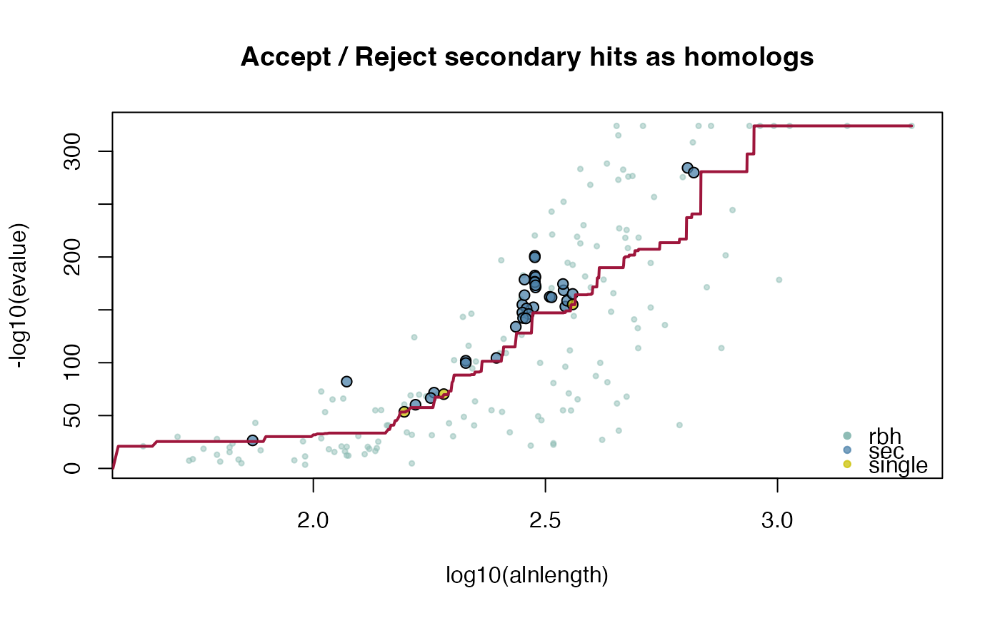
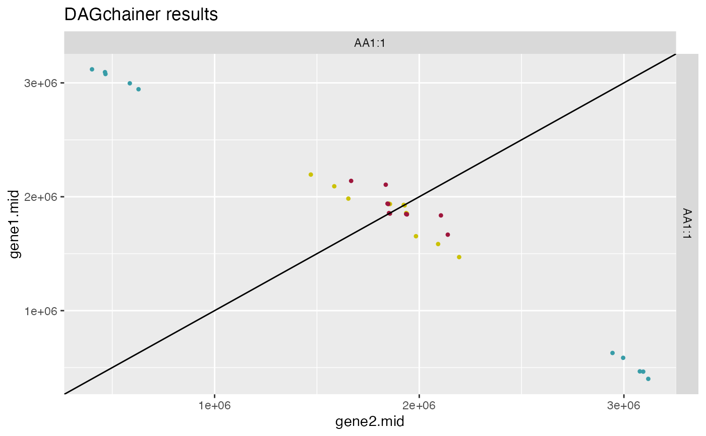

This function runs DAGchainer (http://dagchainer.sourceforge.net/) given CRBHit pairs and gene positions for both cds1 and cds2. The default options are set to not compare gene positions in base pairs but instead using gene order (gene.idx).
Usage
rbh2dagchainer(
rbhpairs,
selfblast1 = NULL,
selfblast2 = NULL,
gene.position.cds1 = NULL,
gene.position.cds2 = NULL,
dagchainerpath = paste0(find.package("CRBHits"), "/extdata/dagchainer/"),
gap_open_penalty = 0,
gap_extension_penalty = -3,
gap_length = 10000,
max_match_score = 50,
max_dist_allowed = 2e+05,
max_evalue = 0.001,
ignore_tandem = TRUE,
only_tandem = FALSE,
min_number_aligned_pairs = 5,
type = "bp",
plotDotPlot = FALSE,
DotPlotTitle = "DAGchainer results",
colorBy = "none",
kaks = NULL,
ka.max = 5,
ks.max = 5,
ka.min = 0,
ks.min = 0,
select.chr = NULL
)Arguments
- rbhpairs
(conditional-)reciprocal best hit (CRBHit) pair result (see
cds2rbh) [mandatory]- selfblast1
(conditional-)reciprocal best hit (CRBHit) pair selfblast result for cds1 sequences (see
cds2rbh) [optional]- selfblast2
(conditional-)reciprocal best hit (CRBHit) pair selfblast result for cds2 sequences (see
cds2rbh) [optional]- gene.position.cds1
specify gene position for cds1 sequences (see
cds2genepos) [default: NULL]- gene.position.cds2
specify gene position for cds2 sequences (see
cds2genepos) [default: NULL]- dagchainerpath
specify the PATH to the DAGchainer binaries [default: /extdata/dagchainer/]
- gap_open_penalty
gap open penalty [default: 0]
- gap_extension_penalty
gap extension penalty [default: -3]
- gap_length
length of a gap (avgerage distance expected between two syntenic genes); if type is set to "idx" use 1 [default: 10000]
- max_match_score
Maximum match score [default: 50]
- max_dist_allowed
maximum distance allowed between two matches; if type is set to "idx" use 20 [default: 200000]
- max_evalue
Maximum E-value [default: 1e-3]
- ignore_tandem
ignore tandem duplicates [default = TRUE]
- only_tandem
only tandem alignments [default = FALSE]
- min_number_aligned_pairs
Minimum number of Aligned Pairs [default: 5]
- type
specify if gene order index "idx" or gene base pair position "bp" should be extracted and used with DAGchainer [default: bp]
- plotDotPlot
specify if dotplot should be plotted [default: FALSE]
- DotPlotTitle
specify DotPlot title [default: 'DAGchainer results']
- colorBy
specify if dagchainer groups should be colored by "Ka", "Ks", "Ka/Ks" or "none" [default: none]
- kaks
specify Ka/Ks input obtained via `rbh2kaks()` [default: NULL]
- ka.max
specify max Ka to be filtered [default: 5]
- ks.max
specify max Ks to be filtered [default: 5]
- ka.min
specify min Ka to be filtered [default: 0]
- ks.min
specify min Ks to be filtered [default: 0]
- select.chr
filter results for chromosome names [default: NULL]
Value
DAGchanier results
1: $gene1.chr
2: $gene1.seq.id
3: $gene1.start
4: $gene1.end
5: $gene1.mid
6: $gene1.idx
7: $gene2.chr
8: $gene2.seq.id
9: $gene2.start
10: $gene2.end
11: $gene2.mid
12: $gene2.idx
13: $evalue
14: $score
References
Haas BJ et al. (2004) DAGchainer: a tool for mining segmental genome duplications and synteny. Bioinformatics. 20(18), 3643-3646.
Examples
## compile dagchainer
CRBHits::make_dagchainer()
## load example sequence data
data("ath", package="CRBHits")
## get selfhits CRBHit pairs
ath_selfhits_crbh <- cds2rbh(
cds1=ath,
cds2=ath,
plotCurve=TRUE)

## get gene position
ath.genepos <- cds2genepos(
cds=ath,
source="ENSEMBL")
## get DAGchainer results
ath_selfblast_crbh.dagchainer <- rbh2dagchainer(
rbhpairs=ath_selfhits_crbh,
gene.position.cds1=ath.genepos,
gene.position.cds2=ath.genepos)
#> [1] "/private/var/folders/wy/d_ysgzdd3_bdgz02jfdy12z00000gp/T/Rtmpffa2Kb/temp_libpath868d643504c0/CRBHits/extdata/dagchainer/run_DAG_chainer.pl -i /var/folders/wy/d_ysgzdd3_bdgz02jfdy12z00000gp/T//RtmpHSEHLZ/filea34274c16094 -o 0 -e -3 -g 10000 -M 50 -D 200000 -E 0.001 -A 5 -I -s"
head(ath_selfblast_crbh.dagchainer)
#> gene1.chr gene1.seq.id gene1.start gene1.end gene1.mid gene1.idx gene2.chr
#> 1 AA1:1 AT1G05100.1 1469541 1470881 1470211 437 AA1:1
#> 2 AA1:1 AT1G05400.1 1584073 1585421 1584747 468 AA1:1
#> 3 AA1:1 AT1G05570.1 1647575 1659611 1653593 484 AA1:1
#> 4 AA1:1 AT1G06100.1 1851472 1853019 1852246 546 AA1:1
#> 5 AA1:1 AT1G06120.1 1855910 1857718 1856814 548 AA1:1
#> 6 AA1:1 AT1G06290.1 1922208 1926278 1924243 570 AA1:1
#> gene2.seq.id gene2.start gene2.end gene2.mid gene2.idx evalue score
#> 1 AT1G07150.2 2193941 2195798 2194870 654 1.1e-55 50
#> 2 AT1G06810.1 2091738 2092539 2092138 620 8.2e-67 67
#> 3 AT1G06490.2 1978378 1989409 1983894 588 1.0e-250 87
#> 4 AT1G06360.2 1938862 1940496 1939679 576 2.0e-200 80
#> 5 AT1G06350.1 1935227 1936841 1936034 575 7.2e-177 130
#> 6 AT1G06310.1 1926652 1930397 1928524 571 1.0e-250 162
#> dagchainer_group
#> 1 AA1:1:AA1:1:1.rev
#> 2 AA1:1:AA1:1:1.rev
#> 3 AA1:1:AA1:1:1.rev
#> 4 AA1:1:AA1:1:1.rev
#> 5 AA1:1:AA1:1:1.rev
#> 6 AA1:1:AA1:1:1.rev
## plot dagchainer
plot_dagchainer(
dag=ath_selfblast_crbh.dagchainer)
#> Scale for colour is already present.
#> Adding another scale for colour, which will replace the existing scale.
